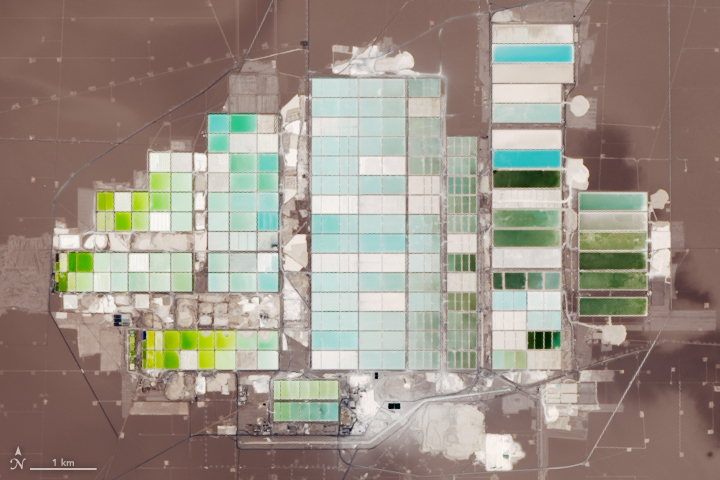

úplná znění předpisů EU (baterie, kritické suroviny, obaly, environmentální tvrzení)
co musí firma splnit a od kdy
Proč to potřebuje manažer/ka udržitelnosti: abyste ověřili tvrzení dodavatele dřív, než ho převezmete; našli riziko v konkrétním kroku řetězce, nejen v zemi těžby; a doložili čísla do reportu a podle předpisů EU.
Těžba (mine production) – vytěžené množství za rok. Zásoby (reserves) – známá ložiska těžitelná se ziskem. Zpracování (refining, smelting) – výroba kovu nebo chemikálií. Primární zdroj – kdo data původně sestavil; v OWID ho uvádí záložka Sources.
Od horniny k materiálu · pět kroků
Koncentrát – produkt úpravy s mnohonásobně vyšším obsahem kovu než ruda. Anodová měď – surová měď z hutě, odlitá do desek (anod). Katodová měď – čistá měď vyloučená na katodě při elektrolytické rafinaci. Rafinace – odstranění nečistot z kovu.
Krok 1 · Těžba
Jak se surovina dostane na povrch
Povrchově: ložisko blízko povrchu, velké a chudé. Př.: Chuquicamata (Cu, Chile), Greenbushes (Li, Austrálie), hnědé uhlí na Mostecku.
Hlubinně: ložisko hluboko nebo v úzkých žilách, těží se bohatší ruda. Př.: Kiruna (Fe, Švédsko), Příbram (Pb, Ag, U, historicky).
Z roztoků: prvek je rozpuštěný ve vodě. Př.: solanky (Li, K, B), mořská voda (NaCl, Mg, Br).
Ruda – hornina, ze které se kov vyplatí získávat. Kovnatost – obsah kovu v rudě (Cu 0,5–1 %, Au 1–5 g/t). Hlušina – vytěžená hornina bez užitečné složky. Skrývka – nadložní hornina, která se odstraní před povrchovou těžbou. Výsypka – násyp ze skrývky (u hlubinných dolů odval z hlušiny). Etáž – stupeň ve stěně lomu.
Krok 1 · Čerpání solanky ve skutečnosti

Snímek: NASA Earth Observatory, data Landsat 8 OLI (U.S. Geological Survey), pořízeno 4. 11. 2018. Volné dílo NASA. Odkaz na snímek.
Salar de Atacama (Chile): odpařovací nádrže na lithium při pohledu z družice. Podle měřítka (1 km) zabírají desítky km².
Co je vidět: barva nádrží se mění s tím, jak se solanka odpařuje a mění složení. Postupně krystalizuje NaCl a KCl, nakonec zbude koncentrát lithia (~6 % Li).
Pro manažera: takový zábor plochy a odpar vody v jedné z nejsušších oblastí světa jsou podstatou sporů o vodu mezi těžaři a místními komunitami (téma T7).
Salar – solná pánev v bezodtoké oblasti, pod solnou krustou je solanka. Solanka – voda s vysokým obsahem rozpuštěných solí. Krystalizace – vylučování pevné soli z roztoku při odpařování.
Krok 2 · Úprava rudy
Z rudy s 0,6 % Cu koncentrát s ~28 % Cu
Drcení a mletí: zrna chalkopyritu CuFeS₂ jsou „zarostlá“ v hornině. Uvolní se až po rozemletí na desetiny milimetru. Mletí je energeticky nejnáročnější část úpravy.
Jiné metody než flotace: magnetická separace (magnetit Fe₃O₄); gravitační dělení podle hustoty ve vodě (zlato, kasiterit SnO₂), nebo v těžké suspenzi, kde se spodumen potopí a lehčí hlušina plave.
Pro manažera: protržení hráze odkaliště v Brumadinhu (Brazílie, 2019) zabilo 270 lidí. Od roku 2020 platí mezinárodní standard pro odkaliště (GISTM).
Úprava rudy – fyzikální oddělení užitečných minerálů od hlušiny, bez chemické přeměny. Koncentrát – produkt úpravy s mnohonásobně vyšším obsahem kovu. Odpad z úpravy (flotační kal) – jemně mletá hlušina s vodou. Odkaliště – nádrž ohrazená hrází, do které se kal ukládá. Těžká suspenze – voda s rozmíchaným jemným práškem ferosilicia, jejíž hustota leží mezi hustotou užitečného minerálu a hlušiny.
1 · Sběrač: do rmutu se přidá sběrač (např. xanthogenan). Naváže se jen na povrch sulfidů a udělá ho vodoodpudivým.
2 · Vzduch: míchadlo rozptýlí do rmutu bubliny. Vodoodpudivá zrna na nich ulpí a vyplavou nahoru.
3 · Pěna: pěnič pěnu stabilizuje; pěna přetéká do žlabu jako koncentrát.
4 · Hlušina: křemen a živce jsou smáčivé, zůstanou ve vodě a odcházejí spodem do odkaliště.
Rmut – směs jemně mleté rudy s vodou. Sběrač (kolektor) – látka, která učiní povrch vybraného minerálu hydrofobním. Pěnič – povrchově aktivní látka, která stabilizuje pěnu. Hydrofobní / hydrofilní – vodu odpuzující / vodou smáčivý.
Krok 3 · Chemická přeměna: proč je potřeba chemie
V minerálu je kov vázaný jako kation. Získat kov znamená redukovat ho.
Mⁿ⁺ + n e⁻ → M elektrony dodá redukční činidlo nebo elektrický proud
Surovina
Kov ve sloučenině
Čím se redukuje
Produkt
hematit Fe₂O₃
Fe³⁺
uhlík, oxid uhelnatý (vysoká pec)
železo
chalkocit Cu₂S
Cu⁺
sulfid sám: Cu₂S + O₂ → 2 Cu + SO₂
měď
křemen SiO₂
Si (ox. číslo IV)
uhlík při ~2 000 °C
křemík
oxid hlinitý Al₂O₃
Al³⁺
elektrický proud (elektrolýza)
hliník
spodumen LiAlSi₂O₆
Li⁺
neredukuje se, baterie potřebují sloučeninu
Li₂CO₃, LiOH
Oxidace – ztráta elektronů; redukce – přijetí elektronů. Kation – kladně nabitý ion. Oxidační číslo – formální náboj atomu ve sloučenině. Redukční činidlo – látka, která elektrony dodá (C, CO, H₂, Mg).
Krok 3 · Tři technologické cesty
Pyrometalurgie
Vysoké teploty, 1 000–2 000 °C.
Fe₂O₃ + 3 CO → 2 Fe + 3 CO₂
Příklady: železo, měď ze sulfidů, křemík, feroslitiny.
+ velké objemy, rychlost − CO₂, SO₂, prach, energie
+ jediná cesta pro velmi reaktivní kovy − velká spotřeba elektřiny
Pražení – zahřívání rudy za přístupu vzduchu (sulfid → oxid). Tavení – zpracování v roztaveném stavu, kov se oddělí od strusky. Loužení – rozpouštění složky z pevné látky roztokem. Tavenina – roztavená sůl nebo oxid. Elektrolýza – rozklad látky elektrickým proudem.
Krok 3 · čím reaktivnější kov, tím víc energie
Celý řetězec od těžby po kov; elektřina přepočtena na primární energii. Zdroj: Norgate, Jahanshahi, Rankin (2007), J. Cleaner Production 15, 838–848.
Měď vychází nízko, i když je v rudě jen ~0,6 %: sulfid se redukuje snadno. U hliníku a titanu rozhoduje pevná vazba kov–kyslík.
Ušlechtilý kov – málo reaktivní, v přírodě se vyskytuje i ryzí (v elementárním stavu). Primární energie – energie v palivech a zdrojích; u elektřiny zahrnuje i ztráty v elektrárně. Krollův proces – výroba titanu redukcí TiCl₄ hořčíkem.
Krok 3 · Elektrodový potenciál: kdo komu předá elektrony
Co to je: schopnost kovu v roztoku vlastních iontů odevzdávat nebo přijímat elektrony. Na rozhraní kov–roztok vznikne elektrická dvojvrstva a s ní napětí.
Standardní potenciál E° se měří vůči standardní vodíkové elektrodě (0 V) při 25 °C a koncentraci iontů 1 mol/l.
Řada napětí kovů řadí kovy od nejzápornějších (neušlechtilé) po kladné (ušlechtilé). Čím zápornější E°, tím snáz se kov oxiduje a tím hůř se z iontů získává.
Fe + Cu²⁺ → Fe²⁺ + Cu cementace
Vytěsňování: méně ušlechtilé železo vyloučí z roztoku měď.
Rafinace: při nízkém napětí se na katodě vylučuje jen měď, nečistoty zůstanou v roztoku nebo v kalu (další slide).
Reaktivní kovy (Al, Na, Li): z vodného roztoku by se místo kovu vylučoval vodík, proto elektrolýza taveniny.
Koroze: zinek jako obětovaná anoda koroduje místo chráněného železa.
Elektroda – vodič, na jehož rozhraní s roztokem probíhá oxidace nebo redukce. Standardní vodíková elektroda – platina sycená vodíkem v roztoku H⁺ (1 mol/l), srovnávací bod 0 V. Cementace – vylučování kovu z roztoku méně ušlechtilým kovem. Obětovaná anoda – kus méně ušlechtilého kovu, který koroduje místo chráněné konstrukce.
Krok 4 · Rafinace: z 99,5 % na 99,99 %
Příklad: elektrolytická rafinace mědi
anoda: Cu → Cu²⁺ + 2 e⁻ katoda: Cu²⁺ + 2 e⁻ → Cu
Proces čištění: ušlechtilejší prvky (Ag, Au, Se, Te) se na anodě neoxidují a padají na dno jako anodový kal. Méně ušlechtilé (Fe, Ni, Zn) se rozpustí, ale na katodě se nevylučují a zůstávají v roztoku.
Z kalu se získává stříbro, zlato, selen a telur (viz vedlejší produkty).
Další metody: destilace (Zn; SiHCl₃ u křemíku), zonální tavení (Si a Ge pro polovodiče), opakované srážení a krystalizace (Li₂CO₃ bateriové kvality ≥ 99,5 %), iontoměniče.
Anoda / katoda – elektroda, na které probíhá oxidace / redukce. Elektrolyt – roztok, který vede proud pohybem iontů. Anodový kal – nerozpustný zbytek pod anodami s ušlechtilými kovy. 4N, 6N – čistota 99,99 % a 99,9999 % (počet devítek).
Práce s výpočtem · měď
Kolik horniny se vytěží pro 1 tunu mědi?
Zadání
ruda obsahuje 0,6 % Cu (minerál chalkopyrit CuFeS₂),
úprava zachytí 88 % mědi, zbytek odchází s odpadem z úpravy,
koncentrát obsahuje 28 % Cu,
ztráty v huti a při rafinaci zanedbejte,
na 1 t rudy připadají 2 t skrývky,
M(Cu) = 63,55 g/mol; M(H₂SO₄) = 98,08 g/mol.
Úkol · 8 min ve dvojicích
Kolik tun rudy je třeba vytěžit na 1 t mědi?
Kolik tun koncentrátu vznikne a kolik tun odpadu z úpravy skončí v odkališti?
Kolik tun horniny se celkem přemístí včetně skrývky?
Síra z chalkopyritu se v huti oxiduje na SO₂ a zachytí jako H₂SO₄. Kolik tun kyseliny může vzniknout na 1 t Cu?
Co se stane s odpověďmi 1 a 3, když kovnatost klesne na 0,4 %? Co to znamená pro energii a emise?
Výtěžnost – podíl kovu z rudy, který se při úpravě skutečně zachytí v koncentrátu. Chalkopyrit – sulfid mědi a železa CuFeS₂, nejběžnější měděný minerál. Skrývka – viz krok 1.
3 · skrývka 2 × 189 = 378 t; celkem asi 570 t horniny na 1 t Cu
4 · CuFeS₂: 1 mol Cu ↔ 2 mol S ↔ 2 mol H₂SO₄. 2 × 98,08 / 63,55 ≈ 3,1 t H₂SO₄ na 1 t Cu. Měděná huť je zároveň chemička.
5 · Při 0,4 %: 1 / (0,004 × 0,88) ≈ 284 t rudy, ~850 t horniny, tedy o polovinu víc. Drcení a mletí rostou s množstvím rudy, proto roste energie, emise, voda i odpad na tunu Cu.
Struska – tavenina oxidů (hlavně křemičitanů železa), která se při tavení oddělí od kovu. Výsypka, odkaliště – viz kroky 1 a 2.
01
Lithium
Nejlehčí kov a klíčová surovina katod
Lithium · technologická schémata
Li₂SO₄ + 2 NaOH → 2 LiOH + Na₂SO₄
Ze spodumenu lze vyrobit hydroxid přímo; ze solanky vzniká nejdřív uhličitan.
Odpady: hlušina a zbytek po loužení (spodumen); NaCl, KCl a Mg(OH)₂ (solanka). KCl se prodává jako hnojivo.
Spodumen – lithný minerál LiAlSi₂O₆. Pegmatit – hrubozrnná vyvřelá hornina, ve které se spodumen vyskytuje. Kalcinace – žíhání pevné látky za vysoké teploty. Bateriová kvalita – čistota požadovaná výrobci katod (Li₂CO₃ ≥ 99,5 %). DLE – přímá extrakce lithia: sorbent vybere Li⁺ ze solanky za hodiny místo měsíců, vyžaduje ale víc energie a sladké vody.
Lithium · pokračování v projektu T7
Co očekáváme od příspěvku „Lithium a voda: solanky vs. horniny“
Klíčová otázka: odkud se lithium bere, kolik vody a energie jeho výroba stojí a jak spolehlivá jsou čísla, která se o tom říkají.
Chemie vlastními slovy: odpařování solanky a srážení Li₂CO₃ proti pražení a loužení spodumenu, s oporou v dnešních schématech.
Výpočet: kolik % lithia obsahuje Li₂CO₃, kolik t Li₂CO₃ odpovídá 1 t Li a kolik litrů vody by podle tvrzení připadlo na baterii s 8 kg Li.
Dva grafy: z OWID těžba a zásoby lithia s vlastním nastavením, druhý vlastní (např. vodní stres v Chile, Austrálii a Argentině). U obou titulek se sdělením, jednotky, zdroj a rok.
Ověření tvrzení: „Na 1 t lithia se odpaří přibližně 2 miliony litrů vody.“ Je to sladká voda, nebo solanka? Primární zdroj a zdůvodněný verdikt.
Závěr pro praxi: co z toho plyne pro firmu, obec nebo stát a co víme jistě a co ne; otázka do diskuse.
T7 · 9. 12. · 10 + 5 min
Proč na tom záleží
Další údaje o lithiu dnes neuslyšíte: kdo těží, kdo zpracovává a kolik to stojí vody, přinese až tento příspěvek.
Snímek s hlavním sdělením a 2–3 čísly poslouží všem jako studijní materiál ke zkoušce.
20 bodů podle rubriky; podklady nejpozději 2 dny předem (7. 12.).
Pro zájemce: přímá extrakce lithia (DLE). Zadání a hodnocení: zadani-projektu.html
02
Uhlík
Grafit pro baterie, koks pro ocel
Jeden prvek, mnoho materiálů
Grafit: vrstvy uhlíkových šestiúhelníků vázané slabými mezivrstevnými silami. Při nabíjení se mezi vrstvy vkládají ionty Li⁺ (interkalace, až LiC₆), proto je grafit anodou téměř všech lithno-iontových baterií.
Typická baterie elektromobilu obsahuje kolem 65 kg grafitu, ale jen asi 9 kg lithia (IEA).
Přírodní × syntetický
Přírodní se těží (Čína 79 % těžby, 2024). Pro anody se musí zakulatit (sféroidizace) a vyčistit na > 99,95 % C, často kyselinou fluorovodíkovou.
Syntetický se vyrábí z ropného nebo jehlového koksu grafitizací při 2 800–3 000 °C; cyklus pece trvá týdny, spotřeba elektřiny je velmi vysoká. Výrobu anodových materiálů ovládá Čína z více než 90 % (IEA).
Uhlík jako koks redukuje železnou rudu (Přednáška 3), jako CO₂ je emise i surovina (Přednáška 4), jako uhlovodíky základ polymerů (Přednáška 5).
Interkalace – vkládání iontů mezi vrstvy krystalové struktury. Sféroidizace – zakulacení částic grafitu. Grafitizace – přeměna uhlíku na grafit zahřátím. Jehlový koks – vysoce uspořádaný koks z ropy nebo dehtu.
Produkt · jak funguje lithno-iontový článek
Vybíjení: Li⁺ putuje elektrolytem ke katodě, elektrony vnějším obvodem přes spotřebič.
anoda: LiₓC₆ → C₆ + x Li⁺ + x e⁻ katoda: Li₁₋ₓMO₂ + x Li⁺ + x e⁻ → LiMO₂ celkem: LiₓC₆ + Li₁₋ₓMO₂ → C₆ + LiMO₂ (M = Ni, Mn, Co; při nabíjení naopak)
„Houpací křeslo“: ionty Li⁺ se přesouvají mezi dvěma hostitelskými strukturami (vrstvy grafitu, vrstvy oxidu kovů). Kovové lithium v článku není.
Proč lithium: nejlehčí kov (6,94 g/mol) s velmi záporným elektrodovým potenciálem (−3,04 V). Napětí článku je proto 3,2–3,7 V a energie na kg vysoká.
Proč je článek hořlavý: voda by se při tomto napětí rozložila, elektrolyt je proto v organických rozpouštědlech.
Kde jsou prvky: Li v katodě a elektrolytu, Ni, Mn, Co (nebo Fe, P) v katodě, C v anodě, Cu a Al ve fóliích.
Elektrolyt – prostředí, které vede ionty, ne elektrony. Separátor – porézní fólie, brání zkratu a propouští ionty. Sběrač proudu – kovová fólie, která odvádí elektrony. Anoda / katoda – při vybíjení záporná / kladná elektroda.
Produkt · od článku k baterii a volba chemie
NMC
LFP
Katoda
Li(Ni,Mn,Co)O₂
LiFePO₄
Kritické prvky
Li, Ni, Co, Mn (+ grafit)
Li (+ grafit), bez Ni a Co
Měrná energie
~250–300 Wh/kg
~160–200 Wh/kg
Životnost
~1 000–2 000 cyklů
3 000 a více cyklů
Bezpečnost, cena
nižší tepelná stabilita, dražší
stabilnější, levnější
Pro manažera: volba chemie mění surovinové riziko.
NMC: kobalt z více než 70 % z DR Kongo (dětská práce v drobné těžbě), nikl hlavně z Indonésie (odlesňování, uhlí).
LFP: tato rizika nemá, ale vyrábí se téměř výhradně v Číně. V roce 2023 tvořila asi 40 % baterií nových elektromobilů (IEA).
NMC – katoda z oxidu lithia, niklu, manganu a kobaltu. LFP – katoda z fosforečnanu železnato-lithného. Měrná energie – energie na kg článku (Wh/kg). Cyklus – jedno nabití a vybití.
03
Hliník
Zakonzervovaná elektřina
Od bauxitu k hliníku
Al(OH)₃ + NaOH → Na[Al(OH)₄] 2 Al₂O₃ + 3 C → 4 Al + 3 CO₂
Bayerův proces: loužení bauxitu NaOH při 150–250 °C, z roztoku se vysráží Al(OH)₃ a kalcinuje na Al₂O₃. Elektrolýza: Al₂O₃ rozpuštěný v roztavené kryolitové lázni (Na₃AlF₆, ~960 °C), proud 300–600 kA na elektrolyzér. Uhlíkové anody se oxidují kyslíkem z oxidu a spotřebují se (~0,4 t C na 1 t Al).
Červený kal: nerozpuštěný zbytek bauxitu (oxidy Fe, Ti, Si) s NaOH, pH 10–13; vzniká ~1–1,5 t na tunu Al₂O₃.
Ajka (Maďarsko), 4. 10. 2010: protržení hráze odkaliště uvolnilo asi 1 mil. m³ kalu. Zemřelo 10 lidí, přes 100 bylo zraněno.
Bauxit – hornina tvořená hlavně hydroxidy hliníku. Kryolit – Na₃AlF₆, roztavené rozpouštědlo pro Al₂O₃. Elektrolýza – rozklad látky elektrickým proudem. Odkaliště – viz krok 2.
Chemický princip: Al(OH)₃ je amfoterní, v roztoku hydroxidu se rozpouští. Fe₂O₃ a TiO₂ ne, zůstanou v červeném kalu (spolu se zbytky NaOH a hlinitokřemičitany sodnými).
Energie: řádově 10 GJ tepla na tunu Al₂O₃ (pára pro loužení, kalcinace), většinou ze zemního plynu nebo uhlí.
Amfoterní – reaguje s kyselinami i se zásadami. Očkování – přidání krystalků, na kterých roste sraženina. Alumina – hutnický oxid hlinitý Al₂O₃ určený k elektrolýze.
Hliník · Hallův–Héroultův elektrolyzér
katoda: Al³⁺ + 3 e⁻ → Al anoda: C + 2 O²⁻ → CO₂ + 4 e⁻ celkem: 2 Al₂O₃ + 3 C → 4 Al + 3 CO₂
Kryolit snižuje teplotu tavení z 2 050 °C na ~960 °C. Roztavený Al je hustší než lázeň, hromadí se na dně.
Provoz: ~4 V, 300–600 kA. Inovace: inertní anody by místo CO₂ uvolňovaly O₂.
Elektrolyzér – vana, ve které probíhá elektrolýza. Sběrnice – mohutný vodič přivádějící proud. Anodový efekt – porucha při nedostatku Al₂O₃, vznikají CF₄ a C₂F₆ (silné skleníkové plyny). Inertní anoda – anoda, která se nespotřebovává.
Práce s daty · dohledejte sami
Čína vyrábí většinu hliníku. Má i většinu bauxitu?
Úkol · 6 min ve dvojicích
Jaký podíl měla Čína na světové výrobě primárního hliníku v roce 1990 a v posledním dostupném roce? Kdy poprvé překročila 50 %?
Jaký podíl má Čína na světové těžbě bauxitu? Které dvě země těží víc?
Jak je možný rozdíl mezi odpověďmi 1 a 2?
Jaký podíl elektřiny v Číně se vyrábí z uhlí? Co to znamená pro uhlíkovou stopu hliníku v evropských výrobcích?
Kde to najdete
1: OWID Minerals explorer: Mineral = Aluminum, Type = Smelter (výroba v hutích), zaškrtněte Share of global, vyberte Čínu.
2: tamtéž, Mineral = Bauxite, Type = Mine. Pro srovnání zemí přepněte na záložku Map nebo Table.
4: OWID, graf Share of electricity production from coal (data Ember a Energy Institute). Porovnejte Čínu, Norsko a Island.
3 · Čína bauxit dováží (hlavně z Guiney). Výhodou není geologie, ale zpracování: levná elektřina, vybudované kapacity, státní podpora.
4 · Z uhlí v Číně pochází asi 60 % elektřiny (2010: ~75 %); mnohé huti mají vlastní uhelné elektrárny. Norsko a Island vyrábějí elektřinu téměř bez uhlí. Hliník „stejné kvality“ tak může mít několikanásobně jinou uhlíkovou stopu.
Primární hliník – vyrobený elektrolýzou z oxidu hlinitého; sekundární – přetavením šrotu. Huť – závod na výrobu kovu.
Recyklace hliníku · chemie i její limity
100 %energie na primární hliník
~5 %energie na přetavení šrotu
Při recyklaci se už nerozkládá oxid (vazba Al–O); kov se jen přetaví (teplota tání 660 °C). Kovová struktura se po ztuhnutí obnoví, hliník proto přetavením „nestárne“. Asi 75 % všeho kdy vyrobeného hliníku je stále v užívání (IAI).
Háček: slitiny. Plechovka (Al–Mn, Al–Mg), okenní profil (Al–Mg–Si) a blok motoru (Al–Si–Cu) mají různé složení.
Legující prvky jsou přísady, které kovu dávají potřebné vlastnosti. Z taveniny je prakticky neodstraníme: hliník má k kyslíku větší afinitu než Si, Fe nebo Cu, takže při oxidační rafinaci by se oxidoval dřív hliník než nečistoty.
Smíšený šrot proto končí jako slévárenská slitina s vysokým obsahem Si (downcycling). Hodnotu šrotu určuje třídění.
Slitina – kov s přísadou dalších prvků. Legující prvky – prvky záměrně přidané do kovu, obvykle v množství do několika procent, aby zlepšily pevnost, odolnost proti korozi nebo slévatelnost (u hliníku Mg, Si, Mn, Cu, Zn). Tvářená slitina – zpracovává se válcováním a lisováním (plechy, profily); slévárenská – odlévá se do forem. Downcycling – recyklace na materiál nižší kvality.
Práce s výpočtem · hliník
Kolik energie je schováno v jedné plechovce?
Zadání
2 Al₂O₃ + 3 C → 4 Al + 3 CO₂
elektrolýza spotřebuje ~14 kWh na 1 kg Al,
recyklace potřebuje ~5 % této energie,
plechovka obsahuje ~13 g hliníku,
jedno nabití mobilu ≈ 0,015 kWh,
M(Al) = 26,98 g/mol; M(Al₂O₃) = 101,96 g/mol.
Úkol · 8 min ve dvojicích
Kolik tun Al₂O₃ je potřeba na 1 t hliníku?
Kolik kWh je „schováno“ v jedné plechovce z primárního a z recyklovaného hliníku?
Kolikrát byste energií jedné plechovky nabili mobil?
Kilowatthodina (kWh) – jednotka energie, 1 kWh = 3,6 MJ. Primární / recyklovaný hliník – vyrobený elektrolýzou z oxidu / přetavením šrotu.
Řešení · energie v plechovce
≈ 12 nabitímobilu odpovídá energie jedné plechovky z primárního hliníku
≈ 0,6 nabitímobilu odpovídá energie jedné plechovky z recyklovaného hliníku
1 · (2 × 101,96) / (4 × 26,98) = 203,9 / 107,9 ≈ 1,89 t Al₂O₃ na 1 t Al. Odpovídá přibližně 2 t oxidu ze schématu.
Pointa: čísla na úrovni jedné plechovky si lidé představí lépe než MWh na tunu. V komunikaci firmy je to užitečný převod, pokud je jasné, co je v čísle započítané.
Manažerský úkol · environmentální tvrzení
„100% recyklovatelná plechovka, šetrná k planetě“
Jste manažer/ka udržitelnosti výrobce nápojů. Marketing chce tento text natisknout na nové plechovky v roce 2027. Vaším úkolem je text posoudit dřív, než půjde do tisku.
1
Chemie: co je na tvrzení pravda a kde je zjednodušené? Myslete na slitiny, ztráty při tavení a lak.
2
Pojmy: jaký je rozdíl mezi „recyklovatelné“, „skutečně recyklované“ a „obsahuje recyklát“? Který údaj rozhoduje o uhlíkové stopě plechovky?
3
Regulace: obstojí text podle pravidel EU platných od roku 2026? Navrhněte přesnější formulaci.
Kde hledat: Směrnice (EU) 2024/825 o posílení postavení spotřebitelů v zájmu ekologické transformace (EUR-Lex); Nařízení (EU) 2025/40 o obalech (PPWR); Metal Packaging Europe a European Aluminium (míra recyklace plechovek); International Aluminium Institute.
Řešení · tvrzení na plechovce
1 · Co platí chemicky
Pravda: hliník se přetavením nedegraduje a lze ho recyklovat opakovaně.
Zjednodušení: „100 %“ v praxi nikdy. Část kovu se při tavení oxiduje na Al₂O₃, lak se spálí, tělo a víčko plechovky jsou z různých slitin.
Z plechovky vznikne opět plechovka jen při odděleném sběru, jinak downcycling.
2 · Tři různé údaje
Recyklovatelné: technicky možné. Neříká, zda se to děje.
Míra recyklace: kolik plechovek se skutečně vrátí do oběhu; v EU zhruba tři čtvrtiny, mezi státy velké rozdíly.
Obsah recyklátu: podíl šrotu v kovu. Ten rozhoduje o uhlíkové stopě: primární Al 15–20 kg CO₂e/kg z uhelné elektřiny, recyklát pod 1 kg CO₂e/kg.
Do reportu (ESRS E5) patří podíl recyklovaných vstupů.
3 · Regulace a lepší text
Směrnice 2024/825 od 27. 9. 2026 zakazuje obecná environmentální tvrzení („šetrné k planetě“) bez prokázaného vynikajícího environmentálního profilu. PPWR zavádí hodnocení recyklovatelnosti obalů podle kritérií (třídy od roku 2030).
„Plechovka obsahuje 68 % recyklovaného hliníku (ověřeno …, 2026). Hliník lze opakovaně recyklovat. Vhoďte ji do kontejneru na kovy.“
04
Křemík
Z křemene do solárních článků a čipů
Křemík · rozhoduje čistota
1 · Metalurgický křemík (~98–99 % Si)
SiO₂ + 2 C → Si + 2 CO (~2 000 °C)
Redukce uhlíkem v elektrické obloukové peci, ~11–13 MWh/t. Použití: slitiny Al, silikony, polysilikon.
Siemensův proces: těkavý trichlorsilan (var 32 °C) se vyčistí destilací a rozloží na tyčích čistého Si.
68 %světové výroby křemíku a ferosilicia připadá na Čínu (2022, USGS via OWID)
> 80 %podíl Číny na výrobních kapacitách v každém kroku řetězce FV panelů; u waferů ~97 % (IEA 2022)
Čistota: solární křemík 6N–9N (99,9999–99,9999999 %), elektronický až 11N. Jeden atom nečistoty na miliardu atomů Si zhoršuje vlastnosti polovodiče.
Metalurgický křemík – technický Si (98–99 %). Polykrystalický křemík (polysilikon) – velmi čistý Si z mnoha drobných krystalů. Trichlorsilan – SiHCl₃, těkavá kapalina. Ferosilicium – slitina Fe a Si pro ocelářství.
Fotovoltaika · od křemene k modulu
Czochralského metoda: zárodečný krystal se pomalu otáčí a vytahuje z taveniny křemíku; vyroste válcový monokrystal až ~2 m dlouhý. Do taveniny se přidá příměs (B, Ga nebo P).
Úspora materiálu: tenčí wafery a tenčí drát snížily spotřebu křemíku z ~16 g/W (2004) pod 3 g/W (Fraunhofer ISE). Až třetina ingotu ale stále odchází jako řezný odpad.
Stříbro: kontakty článků spotřebují zhruba šestinu světové poptávky po stříbře (Silver Institute). Výrobci proto přecházejí na měď.
Ingot – válcový monokrystal křemíku. Wafer (křemíkový plátek) – tenký plátek nařezaný z ingotu. Dopování – řízené přidání příměsi (B, P), která určí typ vodivosti. 9N – čistota 99,9999999 %.
Fotovoltaika · jak funguje křemíkový článek
1 · Absorpce: foton s energií nad 1,1 eV (šířka zakázaného pásu Si) uvolní elektron z vazby; vznikne pár elektron–díra.
2 · Oddělení: elektrické pole p-n přechodu pošle elektrony do n vrstvy a k přednímu kontaktu, díry k zadnímu. Vnějším obvodem teče proud.
3 · Dopování: P (5 valenčních elektronů) dává typ n, B (3) typ p. V bázi stačí řádově 1 atom B na miliony atomů Si, proto musí být výchozí křemík extrémně čistý.
4 · Parametry: napětí článku ~0,6–0,7 V, účinnost komerčních článků ~22–25 %. Modul spojuje do série 60–72 celých nebo 120–144 půlených článků.
Zakázaný pás – energie potřebná k uvolnění elektronu z vazby. Díra – chybějící elektron, chová se jako kladný náboj. Typ n / typ p – převažují volné elektrony / díry. p-n přechod – rozhraní obou vrstev s vnitřním elektrickým polem.
Fotovoltaika · z čeho je modul a co s ním na konci životnosti
Materiál
Podíl hmotnosti
Recyklace
sklo
~76 %
snadná, nízká hodnota
polymery (EVA, fólie)
~10 %
většinou spálení
hliník (rám)
~8 %
snadná
křemík
~5 %
obtížná, ztráta čistoty
kovy (Cu, Ag, Sn, Pb)
~1 %
Cu a Ag cenné, Pb nebezpečné
Typický modul z krystalického Si. Zdroj: IRENA a IEA-PVPS (2016), End-of-Life Management: Solar Photovoltaic Panels.
Pro manažera: FV panely jsou v EU elektroodpad (směrnice WEEE); zpětný odběr financuje výrobce nebo dovozce. Do roku 2050 až 60–78 mil. t odpadních panelů (IRENA).
EVA – ethylen-vinylacetát, průhledný polymer, který zalije články. Zadní fólie – polymerní vrstva chránící modul zezadu. WEEE – směrnice EU o odpadních elektrických a elektronických zařízeních.
Manažerský úkol · lidská práva v dodavatelském řetězci
Fotovoltaika na střechy skladů: odkud je polysilikon?
Jste manažer/ka udržitelnosti logistické firmy. Na střechy skladů se má instalovat FV elektrárna 2 MWp. Nejlevnější nabídka uvádí jen výrobce modulů (Vietnam), původ článků a polysilikonu neuvádí.
1
Řetězec: proč vám země výroby modulu nestačí? Který krok výroby je z hlediska lidských práv a uhlíkové stopy nejrizikovější?
2
Výběrové řízení: jaké tři požadavky na dodavatele doplníte do zadání?
3
Regulace: které předpisy EU budou nákup podobného zboží v příštích letech ovlivňovat?
Kde hledat: IEA Solar PV Global Supply Chains (2022); OHCHR, hodnocení situace v Sin-ťiangu (2022); Nařízení (EU) 2024/3015 o zákazu výrobků z nucené práce; Solar Stewardship Initiative (certifikace dohledatelnosti).
Řešení · fotovoltaika a polysilikon
1 · Rizikový krok: polysilikon
Modul smontovaný ve Vietnamu může obsahovat čínský polysilikon i wafery.
Lidská práva: třetina až necelá polovina polysilikonu (odhady 2020–2022) pocházela ze Sin-ťiangu, kde OSN (OHCHR 2022) popsala riziko nucené práce Ujgurů.
Uhlíková stopa: nejnáročnější krok, v Číně hlavně z uhlí.
2 · Požadavky do zadání
mapování řetězce až k výrobci a závodu polysilikonu,
smluvní právo na audit a odstoupení,
certifikace dohledatelnosti (např. Solar Stewardship Initiative),
EPD nebo uhlíková stopa modulu (kg CO₂e/kWp).
3 · Předpisy
Nařízení (EU) 2024/3015: zákaz výrobků z nucené práce na trhu EU od 14. 12. 2027,
CSDDD (2024/1760): náležitá péče velkých firem (upraveno balíčkem Omnibus),
CSRD, ESRS S2: reporting o pracovnících v hodnotovém řetězci.
Pointa: nejlevnější nabídka může nést skryté riziko: zablokování zboží, reputační škody, nesoulad s reportingem.
EPD – environmentální prohlášení o produktu (ověřená data o dopadech). Náležitá péče – povinnost firmy zjišťovat a omezovat rizika v dodavatelském řetězci. CSDDD – směrnice EU o náležité péči v oblasti udržitelnosti. Ujgurové – turkická muslimská menšina v Sin-ťiangu (severozápad Číny).
05
Ga, Ge, In, Te
Kovy, které se netěží kvůli nim samotným
Vedlejší produkty · „pasažéři“ hlavních kovů
Prvek
Hostitelský kov · kde se získává
Použití
Gallium Ga
Al · z hlinitanového roztoku v Bayerově procesu (bauxit obsahuje ~50 ppm Ga)
LED, výkonová elektronika a 5G (GaN, GaAs)
Germanium Ge
Zn · ze zinkových koncentrátů; také z popílku uhelných elektráren
optická vlákna, infračervená optika, články pro satelity
Indium In
Zn · ze sfaleritu ZnS při výrobě zinku
průhledná vodivá vrstva ITO (oxid india a cínu) v displejích
Telur Te
Cu · z anodových kalů po elektrolytické rafinaci mědi
tenkovrstvé FV panely CdTe, termoelektrika
Důsledek: nabídka vedlejšího produktu je cenově málo pružná. Když stoupne poptávka po indiu, nikdo neotevře nový zinkový důl kvůli indiu: indium tvoří nepatrný zlomek tržeb zinkové hutě. Nabídka závisí na trhu se zinkem.
Vedlejší produkt – kov získávaný jen spolu s jiným, hlavním (hostitelským) kovem. Hlinitanový roztok – roztok Na[Al(OH)₄] z Bayerova procesu. ITO – oxid india a cínu, průhledný a vodivý.
Zamyšlení · 3 min ve dvojicích
Cena germania se za rok zdvojnásobila. Proč se ho nezačne hned vyrábět víc a co může udělat výrobce infračervené optiky?
Najděte alespoň tři strategie. Nápověda: zásoby, recyklace výrobního odpadu, náhrada materiálu, nové zdroje mimo Čínu. Pro každou odhadněte, zda pomůže do 6 měsíců, nebo až za několik let.
Řešení · germanium
Proč výroba nevzroste hned
Germanium je vedlejší produkt zinku a popílku. O objemu těžby rozhoduje trh se zinkem.
Zařízení na zachycování Ge v zinkové huti se buduje roky a investor potřebuje jistotu odbytu i po poklesu ceny.
Výroba je soustředěná (Čína ~68 %) a vývoz podléhá licencím.
Strategie výrobce
do 6 měsíců
skladové zásoby; dlouhodobé kontrakty s více dodavateli; recyklace výrobního odpadu (třísky, kaly z broušení)
1–3 roky
náhrada materiálu tam, kde to optika dovolí (chalkogenidová skla, ZnSe); úspornější konstrukce čoček
3 a více let
nové zdroje: zachycování Ge v zinkových hutích a z popílku v EU a USA; společné projekty s odběrateli
Pointa: u vedlejších produktů nefunguje „vyšší cena → víc těžby“. Firma musí riziko řídit sama: zásobami, recyklací a diverzifikací dodavatelů.
Substituce – náhrada materiálu jiným. Chalkogenidová skla – skla ze sloučenin síry, selenu a teluru, propustná pro infračervené záření. Diverzifikace – rozložení nákupu mezi více dodavatelů.
Práce s daty · Our World in Data, Minerals explorer
Najděte podíl tří největších zemí (top 3) na těžbě a na zpracování vaší suroviny v posledním roce.
Která země vede v těžbě a která ve zpracování? Je to stejná země?
Jak se podíl hlavní země změnil od nejstaršího dostupného roku?
Napište jednu větu se sdělením („titulek grafu“) a zdroj.
Skupina
Těžba
Zpracování
A
Nickel · Mine
Nickel · Processing
B
Copper · Mine
Copper · Refinery
C
Cobalt · Mine
Cobalt · Refinery
D
Graphite · Mine
Gallium · Processing
Kde to najdete: OWID Minerals explorer, Metric = Production, zaškrtněte Share of global. Přesná čísla jsou v záložce Table, původ dat v Sources.
Mine – těžba. Refinery – rafinace. Processing – zpracování na kov, u gallia jeho získání jako vedlejšího produktu. Share of global – podíl na světovém úhrnu.
Řešení · těžba, nebo zpracování
Skupina
Těžba
Zpracování
Vývoj podílu
A nikl
Indonésie 60 %, Filipíny 9 %, Rusko 6 % top 3: 74 %
Indonésie 41 %, Čína 28 %, Rusko 5 % (2023) top 3: 74 %
Indonésie ve zpracování: 1 % (2000) → 41 % (2023)
B měď
Chile 23 %, DR Kongo 14 %, Peru 11 % top 3: 49 %
Čína 44 %, DR Kongo 9 %, Chile 7 % top 3: 61 %
Chile v těžbě: 35 % (2000) → 23 % (2024)
C kobalt
DR Kongo 76 %, Indonésie 10 %, Rusko 3 % top 3: 89 %
Čína 76 %, Finsko 10 %, Kanada 4 % (2021) top 3: 90 %
Podíly na světové produkci, rok 2024, není-li uvedeno jinak. Zdroj: USGS/BGS via Our World in Data, Minerals explorer.
Pointa: těžba a zpracování často leží v jiných zemích a u mědi, kobaltu a gallia zpracování vede Čína. Nikl ukazuje opačný tah: Indonésie zakázala vývoz rudy (2020) a zpracování přitáhla k sobě. Proto EU v Aktu o kritických surovinách stanovuje vedle cíle 10 % těžby i cíl 40 % zpracování v EU.
Pozor na data: rafinace kobaltu v OWID končí rokem 2021, zpracování niklu rokem 2023 a u rafinace mědi a gallia začíná řada až rokem 2020. I chybějící roky jsou zjištění o datech a patří do poznámky pod grafem.
Shrnutí
Lithium: dvě technologické cesty, z hornin (energeticky náročná) a ze solanek (zásah do vodního režimu). Data a dopady přinese projekt T7.
Grafit: anoda lithno-iontových baterií. Těžba přírodního i výroba syntetického a anodových materiálů je převážně v Číně.
Hliník: zakonzervovaná elektřina. Uhlíková stopa závisí na zdroji elektřiny; recyklace ušetří až 95 % energie, ale vyžaduje třídění podle slitin. Rozlišujte recyklovatelnost, míru recyklace a obsah recyklátu.
Křemík: drahá je čistota, ne surovina. U FV je klíčový původ polysilikonu: energie i lidská práva.
Ga, Ge, In, Te: vedlejší produkty, jejichž nabídka nereaguje na cenu. Riziko řídí zásoby, recyklace a diverzifikace.
Data: těžba a zpracování často leží v jiných zemích, zpracování se nejčastěji soustředí v Číně. U každého čísla kontrolujte, co se měří, jednotku, rok a primární zdroj.
Zdroje dat a předpisů
OWID · Minerals explorerTěžba a zpracování Li, Al, bauxitu, Cu, Co, grafitu, Si, Ga, Ge podle zemí; přepínač „Share of global“, záložky Map a Table.
grafy, podíly zemí
USGS · Mineral Commodity SummariesKaždoroční přehled těžby a zásob podle zemí, kapitoly pro jednotlivé suroviny (PDF zdarma).
zásoby, přesná čísla
IEA · Global Critical Minerals OutlookPodíly zemí na těžbě i rafinaci, výhled poptávky; Solar PV Global Supply Chains pro fotovoltaiku.
zpracování
International Aluminium InstituteStatistiky výroby, spotřeby energie, emisí a recyklace hliníku.